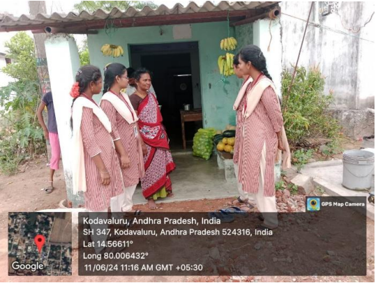

As a part of village development plans we focussed on drinking water in this week.
We asked some people in that village whether they get water everyday and whether the water is neat,clean and hygienic.
We have mentioned the importance of drinking water.
We searched where there are drinking water taps in that village.
We gave them awareness about drinking water and told them not to drink contaminated water.
We conclude that contaminated water and poor sanitation are linked to transmission of diseases such as cholera, diarrhoea, typhoid, polio etc.